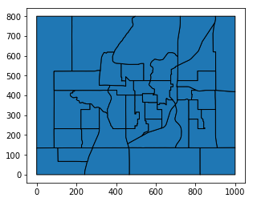

200: Exampville Simulated Data¶
[1]:
import larch, numpy, pandas, os, geopandas
larch.__version__
[1]:
'5.2.11'
Welcome to Exampville, the best simulated town in this here part of the internet!
Exampville is provided with Larch to illustrate the kind of data that a transportation planner might have available when building a travel model. This data is almost entirely fictional.
[2]:
import larch.exampville
TAZ Shapefile¶
The shapefile that includes a map of the travel analysis zones in Exampville is stored in a zip file.
[3]:
larch.exampville.files.shapefile
[3]:
'../../data_warehouse/exampville_taz.zip'
Geopandas can open and read this data directly with unzipping it on disk first, by including the “zip://” protocol in front of the filename.
[4]:
taz_shape = geopandas.read_file("zip://"+larch.exampville.files.shapefile)
[5]:
taz_shape.plot(edgecolor='k');

TAZ Employment Data¶
[6]:
larch.exampville.files.employment
[6]:
'../../data_warehouse/exampville_employment.csv.gz'
[7]:
emp = pandas.read_csv(larch.exampville.files.employment, index_col='TAZ')
[8]:
emp.info()
<class 'pandas.core.frame.DataFrame'>
Int64Index: 40 entries, 1 to 40
Data columns (total 3 columns):
NONRETAIL_EMP 40 non-null int64
RETAIL_EMP 40 non-null int64
TOTAL_EMP 40 non-null int64
dtypes: int64(3)
memory usage: 1.2 KB
[9]:
emp.head()
[9]:
| NONRETAIL_EMP | RETAIL_EMP | TOTAL_EMP | |
|---|---|---|---|
| TAZ | |||
| 1 | 88 | 236 | 324 |
| 2 | 45 | 6 | 51 |
| 3 | 118 | 1 | 119 |
| 4 | 183 | 7 | 190 |
| 5 | 24 | 8 | 32 |
Skims¶
The network skims for Exampville are stored in open matrix format. Larch includes a OMX reader, which also embeds a number of handy tools for processing OMX data into formats useful for discrete choice analysis.
[10]:
larch.exampville.files.skims
[10]:
'../../data_warehouse/exampville_skims.omx'
[11]:
skims = larch.OMX( larch.exampville.files.skims, mode='r' )
skims
[11]:
<larch.OMX> ⋯/exampville_skims.omx
| shape:(40, 40)
| data:
| AUTO_COST (float64)
| AUTO_DIST (float64)
| AUTO_TIME (float64)
| BIKE_TIME (float64)
| TRANSIT_FARE (float64)
| TRANSIT_IVTT (float64)
| TRANSIT_OVTT (float64)
| WALK_DIST (float64)
| WALK_TIME (float64)
Households¶
[12]:
larch.exampville.files.hh
[12]:
'../../data_warehouse/exampville_households.csv.gz'
[13]:
hh = pandas.read_csv( larch.exampville.files.hh )
[14]:
hh.info()
<class 'pandas.core.frame.DataFrame'>
RangeIndex: 5000 entries, 0 to 4999
Data columns (total 7 columns):
X 5000 non-null float64
Y 5000 non-null float64
INCOME 5000 non-null int64
geometry 5000 non-null object
HOMETAZ 5000 non-null int64
HHSIZE 5000 non-null int64
HHID 5000 non-null int64
dtypes: float64(2), int64(4), object(1)
memory usage: 273.5+ KB
[15]:
hh.head()
[15]:
| X | Y | INCOME | geometry | HOMETAZ | HHSIZE | HHID | |
|---|---|---|---|---|---|---|---|
| 0 | 591.56 | 302.94 | 114426 | POINT (591.5599999999999 302.94) | 30 | 1 | 50000 |
| 1 | 605.69 | 293.28 | 122271 | POINT (605.6900000000001 293.28) | 30 | 5 | 50001 |
| 2 | 586.10 | 315.76 | 25673 | POINT (586.1 315.76) | 30 | 1 | 50002 |
| 3 | 557.38 | 301.54 | 67327 | POINT (557.38 301.54) | 30 | 2 | 50003 |
| 4 | 588.03 | 281.32 | 86781 | POINT (588.03 281.32) | 30 | 2 | 50004 |
Persons¶
[16]:
larch.exampville.files.person
[16]:
'../../data_warehouse/exampville_persons.csv.gz'
[17]:
pp = pandas.read_csv( larch.exampville.files.person )
[18]:
pp.info()
<class 'pandas.core.frame.DataFrame'>
RangeIndex: 9146 entries, 0 to 9145
Data columns (total 8 columns):
PERSONID 9146 non-null int64
HHID 9146 non-null int64
HHIDX 9146 non-null int64
AGE 9146 non-null int64
WORKS 9146 non-null int64
N_WORK_TOURS 9146 non-null int64
N_OTHER_TOURS 9146 non-null int64
N_TOURS 9146 non-null int64
dtypes: int64(8)
memory usage: 571.7 KB
[19]:
pp.head()
[19]:
| PERSONID | HHID | HHIDX | AGE | WORKS | N_WORK_TOURS | N_OTHER_TOURS | N_TOURS | |
|---|---|---|---|---|---|---|---|---|
| 0 | 60000 | 50000 | 0 | 43 | 1 | 1 | 1 | 2 |
| 1 | 60001 | 50001 | 1 | 50 | 1 | 0 | 0 | 0 |
| 2 | 60002 | 50001 | 1 | 49 | 1 | 1 | 1 | 2 |
| 3 | 60003 | 50001 | 1 | 29 | 1 | 2 | 1 | 3 |
| 4 | 60004 | 50001 | 1 | 12 | 0 | 0 | 1 | 1 |
Tours¶
[20]:
larch.exampville.files.tour
[20]:
'../../data_warehouse/exampville_tours.csv.gz'
[21]:
tour = pandas.read_csv( larch.exampville.files.tour )
[22]:
tour.info()
<class 'pandas.core.frame.DataFrame'>
RangeIndex: 15934 entries, 0 to 15933
Data columns (total 6 columns):
TOURID 15934 non-null int64
HHID 15934 non-null int64
PERSONID 15934 non-null int64
DTAZ 15934 non-null int64
TOURMODE 15934 non-null int64
TOURPURP 15934 non-null int64
dtypes: int64(6)
memory usage: 747.0 KB
[23]:
tour.head()
[23]:
| TOURID | HHID | PERSONID | DTAZ | TOURMODE | TOURPURP | |
|---|---|---|---|---|---|---|
| 0 | 0 | 50000 | 60000 | 13 | 1 | 1 |
| 1 | 1 | 50000 | 60000 | 16 | 1 | 2 |
| 2 | 2 | 50001 | 60002 | 28 | 1 | 1 |
| 3 | 3 | 50001 | 60002 | 37 | 1 | 2 |
| 4 | 4 | 50001 | 60003 | 26 | 1 | 1 |